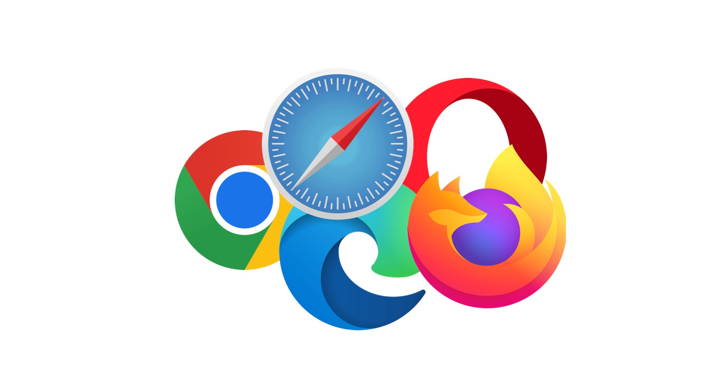

Guerra dos Browsers
 Guerra dos Browsers ou guerra dos navegadores Web,[1] foi um período (aproximadamente de 1995 a 1999) na história da Internet no qual a empresa Netscape, produtora do software browser (navegador) de mesmo nome, perde a sua liderança absoluta no mercado de softwares dessa categoria para a empresa Microsoft, produtora do Internet Explorer. A Guerra dos Browsers teve grande importância na área de informática pois resultou numa reversão total no uso de um software para outro, além de gerar projetos como o Mozilla e o Opera. Neste período a Microsoft foi processada pela Netscape alegando que a sua concorrente estaria utilizando táticas monopolistas para ganhar o mercado de browsers, já que a mesma, segundo a Netscape, se aproveitou de sua liderança no mercado de sistemas operacionais (Windows 95, Windows 98) e adicionou juntamente ao Windows o Internet Explorer. Dessa forma os usuários, pela praticidade, iriam automaticamente utilizar este ao invés de fazer o download do Netscape. Com a introdução do HTML5 e do CSS 3, uma nova geração da guerra de navegadores começou, desta vez adicionando extensos scripts do lado do cliente à World Wide Web, bem como um uso mais amplo de smartphones e outros dispositivos móveis para navegar na web. Esses recém-chegados garantiram que as batalhas entre navegadores continuassem entre os entusiastas, enquanto o usuário médio da web é menos afetado.